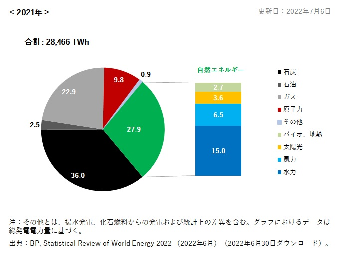
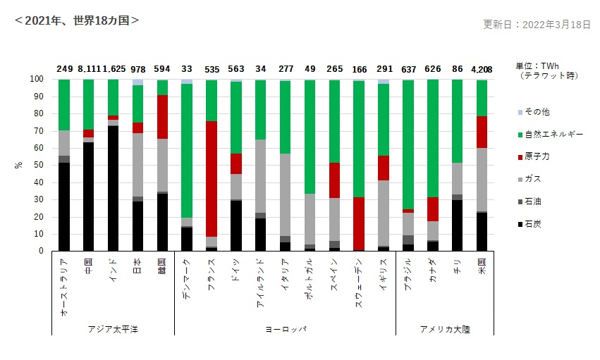

世界ではエネルギー問題が騒がれている。工業の発展によるエネルギー需要の増大、エネルギー資源の枯渇、環境汚染や地球温暖化問題等。
このような中、効率的で二酸化炭素を排出しない原子力発電に注目が集まっている。流動的で不安定な世界情勢の中、原子炉新設計画が進んでいる。
しかし、そこには原発へのテロ脅威が潜んでいる。
原発に、どのようなテロ行為が起こりえるのか以下の4つにまとめた。
通常核燃料は大きく重いため、奪取は容易ではないが、重武装・組織的な犯行の場合、成功する可能性もある。
旧ソ連等では核物質の管理がずさんであったことから、盗難や紛失が実際に起こっている。
また、原発以外にも、核燃料サイクル施設等からプルトニウム、劣化ウランや核廃棄物等が盗まれた場合、
それぞれ原子爆弾、劣化ウラン弾、汚い爆弾（危険な放射性物質を爆薬などで広範にばらまき、市民の殺傷や都市の汚染をねらう新たなテロの方法)(JapanKnowledge 2022-11-22)への転用が可能となり、危険が大きい。
原発自体を攻撃し、原子炉の爆破や放射能の漏洩等を誘発するテロは、炉心が多重防御コンセプトにより幾重にもなる格納容器によって覆われていることや、
核分裂の暴走を回避する安全システムが組まれていることから、容易ではないと考えられる。しかし、米国同時多発テロのような航空機の突入に関しては、機体の重量、燃料の有無、突入時の速度等状況によって異なるが、
最悪のシナリオの場合、炉心に何らかの影響が出る可能性はある
2003 年 8 月 14 日の北米大停電の例のように、電力供給が途絶えた場合の被害は甚大なものとなる。原子炉の中央制御室を占拠さえすれば、原子力に関する知識がない人間でも原子炉の稼動を停止できると言われている。
世界の総電力量の9.8％が原子力発電でまかなわれている(自然エネルギー財団 2021)。

図１（世界の電力電源構成）
世界各国においても電力供給を原子力発電に依存しているため(自然エネルギー財団 2021)、原発がストップした場合、国の経済産業に多大な影響が予想される。

図２（国別の電力電源構成）
原発の制御系システムに侵入し、燃料操作によって炉心に影響を与える等、原発へのサイバーテロが発生すれば、最悪の場合、放射能洩れの危険性もある。世界的なサイバー攻撃の事例として、
アメリカのカンザス州バーリントン近郊の原子力発電所を標的としたサイバー攻撃が挙げられる。
このように、核物質という危険物を扱う原発ならではの攻撃手法があり、また攻撃が成功した場合の被害の甚大さを考慮すると、
原発へのテロ脅威は非常に高いと言える。
[1]"汚い爆弾［軍縮／平和］", 情報・知識 imidas, JapanKnowledge, https://japanknowledge.com , (参照 2022-11-22)
[2]自然エネルギー財団「世界の電力」『電源構成（％）』 https://www.renewable-ei.org/statistics/international/
[3]自然エネルギー財団「国別の電力」『電源構成』 https://www.renewable-ei.org/statistics/international/
[4] 東京海上日動リスクコンサルティング「原子力発電所に忍び寄るテロ脅威」https://www.tokio-dr.jp/publication/report/trc-eye/pdf/pdf-trc-eye-154.pdf